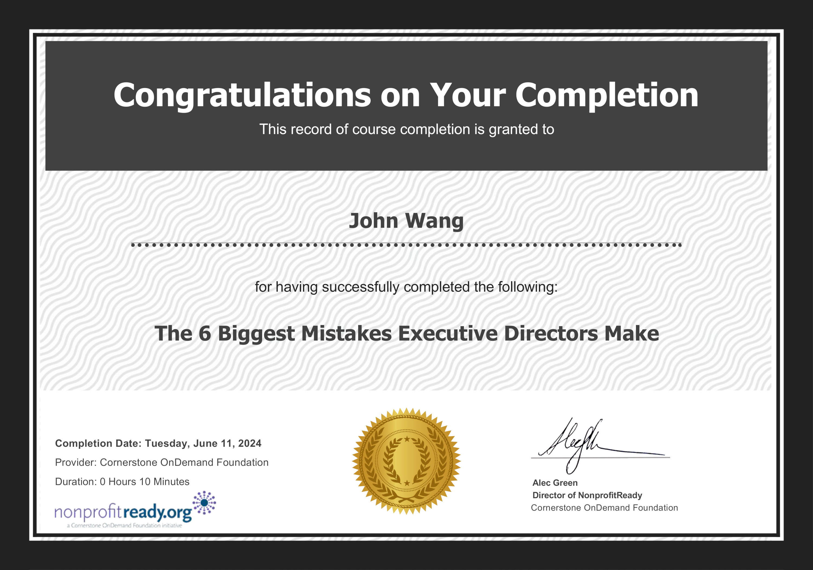

John's Board of Directors Certificates
Corporate Governance (2)
Corporate Governance Certificate from Alison by Robert Klonoski

Corporate Governance from Great Learning Academy by Jeevan Sasidharan
Nonprofit Governance (2)
Setting Up a Nonprofit Board from Philanthropy University


Nonprofit Board Member Essentials Certificate from Cornerstone OnDemand Foundation

Executive Director (1)
The 6 Biggest Mistakes Executive Directors Make from NonprofitReady by Cornerstone OnDemand Foundation
